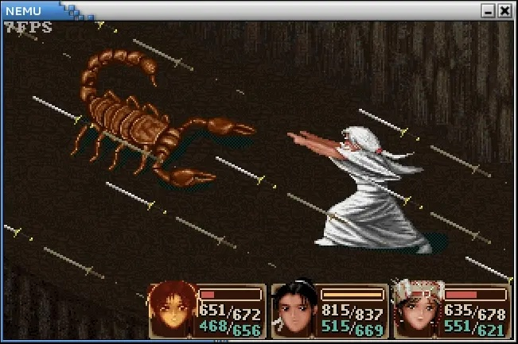
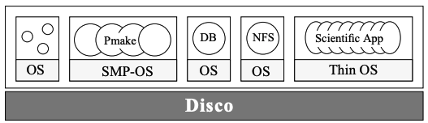

addi r1, r1, -16 (PowerPC)// 手写的汇编 (T0 通常是寄存器)
// op_movl_T0_r1
// op_addl_T0_im
// op_movl_r1_T0
void op_addl_T0_im(void) {
T0 = T0 + ((long)(&__op_param1));
}

def Y(f):
def wrapper(*args):
return f(wrapper)(*args)
return wrapper
factorial = Y(lambda f: lambda n: 1 if n < 2 else n * f(n - 1))
ps | grep SomeProcesskill -9 31181pidfd_open(pid) → 获得 fdpidfd_send_signal(fd, sig) → 给进程发信号chroot(“/path/to/root”)/ 就是 “/path/to/root”cat /proc/*/cgroup; /sys/fs/cgroup